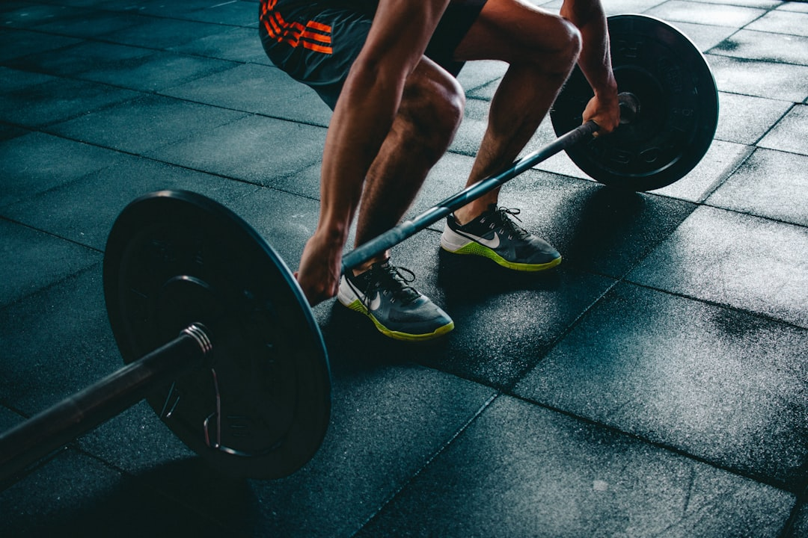

Come AresAI Trasforma la Gestione di Allenamenti e Diete per Personal Trainer, Palestre e Atleti

Ottimizzare la Performance di Personal Trainer, Palestre e Atleti con AresAI: L’Innovazione che Cambia le Regole del Gioco
- Gli operatori del fitness perdono tempo prezioso digitando manualmente carichi, serie e monitorando calorie.
- Questa inefficienza genera frustrazione e una raccolta dati spesso imprecisa o incompleta.
- AresAI propone una soluzione SaaS innovativa con Voice Coach H24 e Dieta fotografica multimodale, automatizzando e rendendo smart il coaching e il tracciamento nutrizionale.
Analisi Approfondita della Notizia e delle Implicazioni Operative
Nel panorama competitivo del fitness, la digitalizzazione degli allenamenti e delle diete ha assunto un ruolo cruciale. Tuttavia, molti Personal Trainer, Palestre e Fitness Coach si trovano ancora incastrati in processi operativi obsoleti e maniacali: annotare ogni carico sollevato, contare serie ripetute e calcolare calorie o grammi alimentari in modo manuale. Questo metodo non solo rallenta notevolmente la fluidità degli allenamenti, ma espone anche a errori di calcolo e dimenticanze, compromettendo la qualità complessiva del tracking e della personalizzazione.
La crescente domanda di un'esperienza sempre più smart e fluida rende queste inefficienze un tasto dolente che può impattare sulla fidelizzazione dei clienti e sui risultati conseguiti. Senza contare l’aumento del carico mentale per allenatori e atleti, costretti a staccare dall’azione per gestire dati pesanti e ripetitivi.
Le Conseguenze e i Costi di Non Agire: Digitazione Manuale e Tracciamento Noioso Come Ostacolo alla Crescita
I costi nascosti connessi al metodo tradizionale sono molteplici e spesso sottovalutati. Prima di tutto, il tempo perduto a inserire manualmente carichi, serie, tipi di esercizio e macro nutrizionali si traduce in meno tempo dedicato all’ottimizzazione dell’allenamento e alla relazione personalizzata con il cliente.
In secondo luogo, questo processo manuale alimenta un senso di frustrazione, sia per i coach che per chi si allena, con un evidente impatto sulla motivazione generale. L’ambiente di lavoro diventa meno efficiente e più soggetto a distrazioni, peggiorando la qualità dei dati raccolti e quindi dei feedback forniti.
Infine, la difficoltà nel tracciamento alimentare, con la necessità di pesare o contare grammi e calorie, rende la dieta un fattore spesso trascurato o approssimativo, limitando fortemente la capacità di ottenere risultati ottimali e personalizzati nel lungo termine. Tutto ciò contribuisce a un incremento di errori e una diminuzione della competitività del servizio offerto.
Come AresAI Risolve il Problema: Voice Coach H24 e Dieta Fotografica Multimodale per una Gestione Semplificata e Intelligente
AresAI, il SaaS sviluppato da RM Studio, propone una risposta allineata e tecnologicamente avanzata alle sfide operative di Personal Trainer, Palestre, Fitness Coach e Atleti. Il sistema integra un Voice Coach sempre accessibile tramite un QR Code posizionato direttamente sul rack in sala pesi. L’atleta o il coach possono così comandare e registrare le serie, i carichi e gli esercizi con semplici comandi vocali, senza mai interrompere l’allenamento. Un ascoltatore digitale H24 che snellisce notevolmente il processo di tracking mantenendo alta la concentrazione durante la sessione.
In parallelo, AresAI rivoluziona il tracciamento alimentare con una Dieta fotografica multimodale istantanea. Basta una foto al piatto per ottenere il calcolo immediato e preciso delle calorie, macro e micronutrienti, eliminando il tedioso conteggio casalingo. Questo approccio innovativo non solo migliora l’aderenza alla dieta, ma consente ai coach di ricevere dati realistici e aggiornati per adeguare tempestivamente i piani nutrizionali.
AresAI offre quindi due piani flessibili: l’abbonamento Atleta PRO a 19€ al mese e Coach Hub per Personal Trainer a 99€ mensili, pensati per adattarsi alle esigenze di singoli atleti o professionisti in palestra, garantendo scalabilità e supporto completo.
Tabella Comparativa: Gestione Tradizionale vs Con AresAI
| Aspetti | Gestione Tradizionale | Con AresAI |
|---|---|---|
| Inserimento dati allenamento | Manuale e intermittente, tentazione di semplificare o dimenticare | Comandi vocali intuitivi, registrazione in tempo reale |
| Monitoraggio nutrizionale | Conteggio calorie e grammi manuale, noioso e impreciso | Dieta fotografica multimodale istantanea, automatizzata |
| Efficienza operativa | Tempi lunghi, maggior stress e distrazioni | Ottimizzazione del tempo e focus sull’allenamento |
| Adattabilità e scalabilità | Limitata, dipendenza da approcci individuali | Flessibile, ideale per atleti singoli e team di coach |
💡 Ti è stato utile questo approfondimento?
Condividilo con un collega o un amico del settore Personal Trainer, Palestre, Fitness Coach e Atleti a cui potrebbe interessare!
FAQ: Domande Frequenti sull’Utilizzo di AresAI per il Settore Fitness
1. AresAI funziona anche in ambienti con rumore elevato come le palestre affollate?
Sì, il Voice Coach è progettato per riconoscere e processare comandi vocali anche in presenza di rumori ambientali, grazie a sofisticati algoritmi di filtraggio e intelligenza artificiale adattiva.
2. Quali dispositivi servono per utilizzare la Dieta fotografica multimodale?
Basta uno smartphone con fotocamera: scattando una foto del piatto, AresAI processa l'immagine e fornisce in tempo reale calorie e composizione nutrizionale.
3. Come posso integrare AresAI nel mio centro fitness o come personal trainer?
È sufficiente sottoscrivere il piano Coach Hub o Atleta PRO e applicare i QR Code forniti nel rack o nelle postazioni di allenamento; il sistema è immediatamente operativo e facile da gestire.
Inizia Subito
Atleta PRO a €19/mese o Coach Hub per Personal Trainer a €99/mese.
Fonti Ufficiali e Risorse Esterne
Scopri l'Intelligenza Artificiale per la tua attività
Ottimizza i processi e aumenta le vendite con le soluzioni B2B di RM Studio.
Scopri AresAI